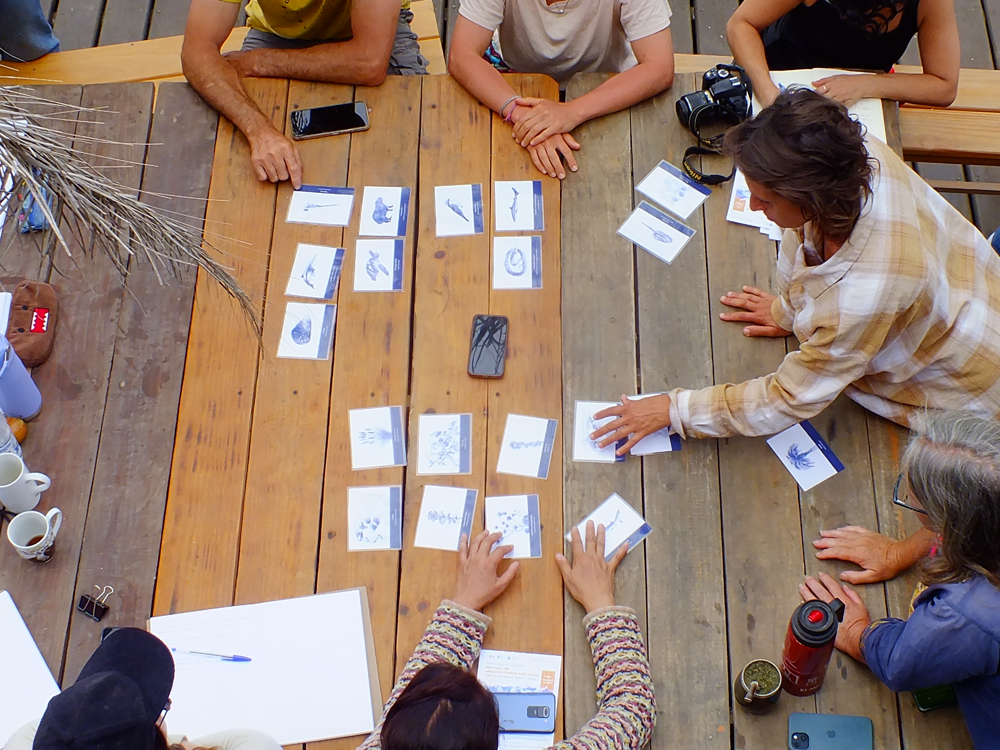
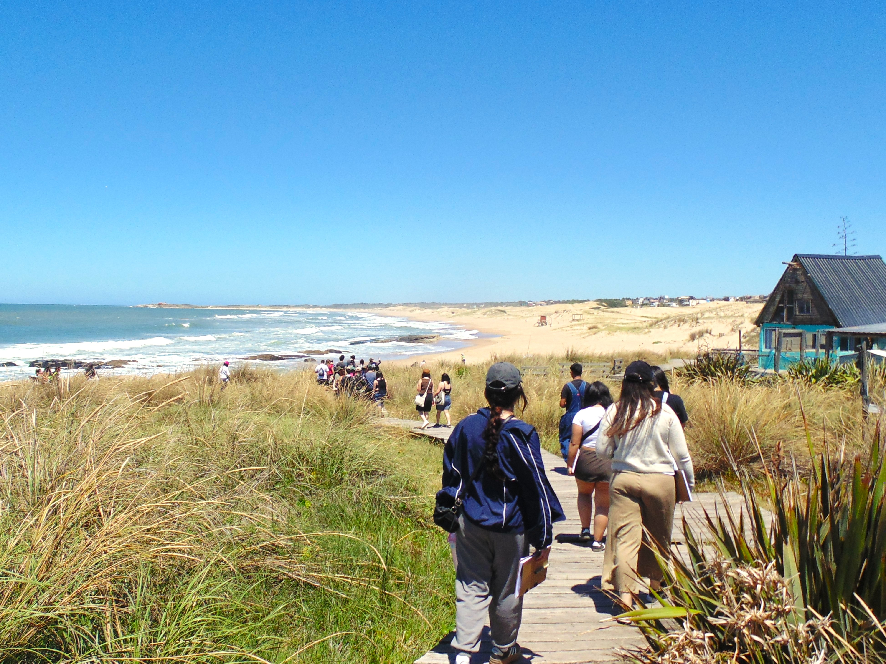
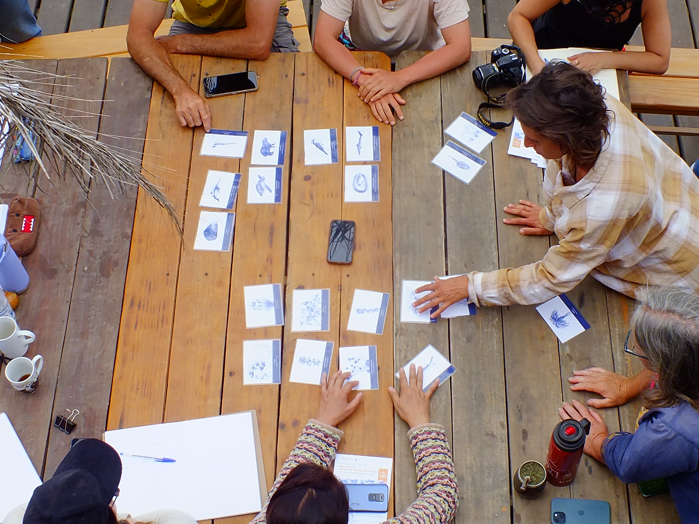
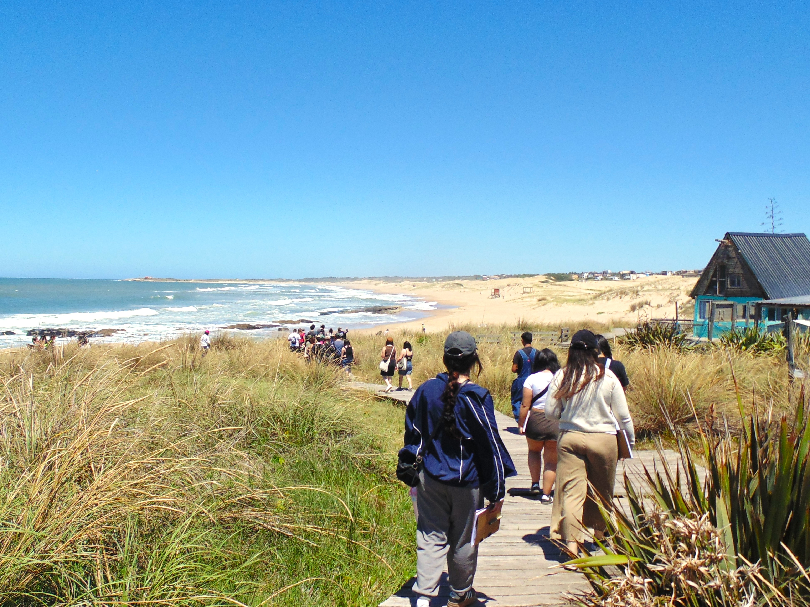
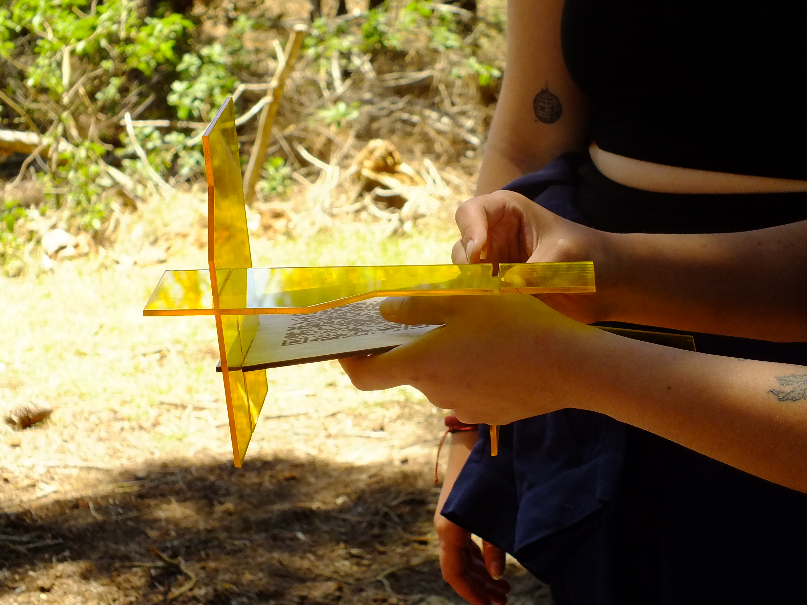
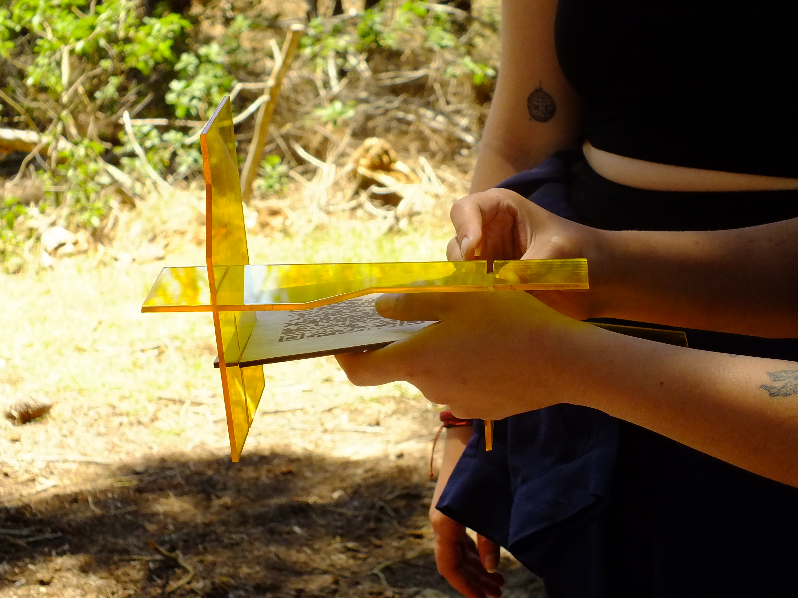

Travesía
Punta del Diablo 2025
Las travesías son viajes académicos que se realizan una vez al año durante el mes de noviembre, organizados por cada taller de la Escuela de Arquitectura y Diseño de la Pontificia Universidad Católica de Valparaíso. Este ejercicio, que lleva más de 40 años realizándose, recorre principalmente la extensión del continente americano, permitiendo a estudiantes y docentes explorar de manera directa las posibilidades de sus oficios.
Partimos en estos viajes no solo con el propósito de estudiar y aplicar conocimientos en terreno, sino que también con la disposición de escuchar, observar y comprender a las comunidades que nos reciben, para finalmente otorgar un presente.
 



 

La travesía 2025 a Punta del Diablo se presenta como una experiencia de inmersión territorial, pedagógica y afectiva entre bosques psamófilos, borde costero y memorias comunitarias. Los equipos docentes y estudiantiles de Chile, provenientes de la e[ad] PUCV, permanecieron en obra durante una semana construyendo el recorrido del ecoparque mediante hitos verticales, con el propósito de dar forma y sentido al trayecto e informar a la comunidad sobre la flora y fauna del territorio, junto con las memorias vinculadas a la vida local.
Adicionalmente, se integraron la FADU-UdelaR, el CURE, el laboratorio LUPA y diversas organizaciones locales, quienes colaboraron en una microintervención dentro del Ecoparque Punta del Diablo, fortaleciendo el trabajo colectivo y el intercambio entre instituciones y comunidad.